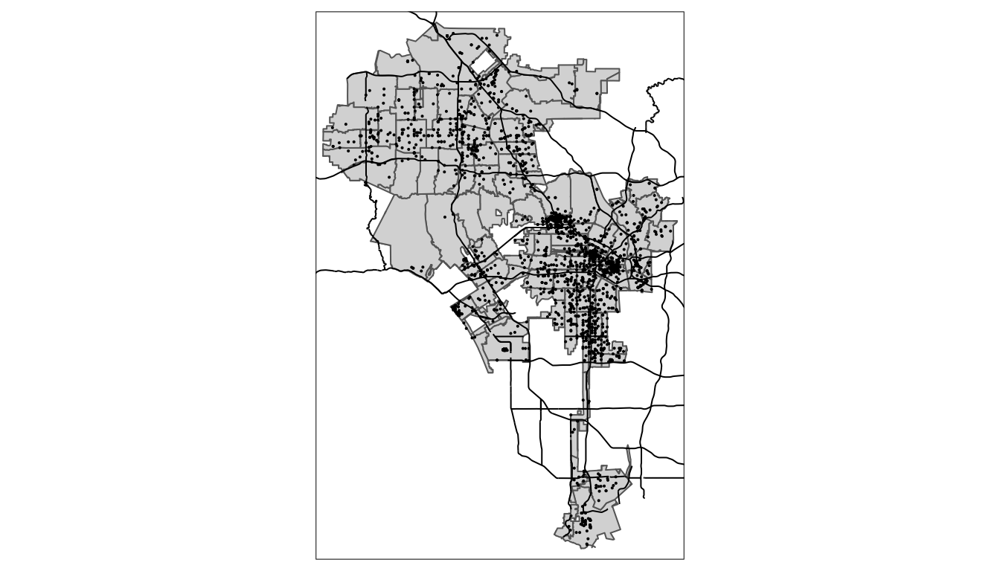

AFAM 188: R 4 Mapping in R: tmaps continued
Two weeks ago we covered some basic
4.1 GGPLOT map
How about we make a map with GGPLOT? We do this by using our longitude and latitude variables as our x and y mapping.

We can see the general shape of LA county, but there are limits to what you can do with geospatial data in ggplot. It doesn’t know what to do with the latitude and longitude beyond adding the points to a plot. It has no sense of the layers we used in QGIS. But other R packages gives us these capabilities.
4.2 Mapping in R
We need a way to tell arrests that it is a spatial object in R. To do that we need to use two spatial packages. Let’s load them.
## Linking to GEOS 3.7.2, GDAL 2.4.2, PROJ 5.2.0sf stands for spatial features. tmap let’s us plot maps like ggplot. Ok, first up, let’s convert our arrests data to a spatial feature. We need to do this b/c tmap will need this information so we can use on a map. I’ll create a new data frame called arrests_sf and use the st_as_sf() that lets us convert our data frame to a sf object using the latitude and longitude.
Notice a couple of things you haven’t seen before. We have a coords argument that we use a c() function to combine our latitude and longitude columns. We also tell the function what Cordinate Refernce System be are using 4326 is a common one.
Let’s look at this new spatial data frame:
We now have a column called geometry at the end of our data frame. This contains our latitude and longitude.
One thing nice is that we can use the plot() function to plot our spatial data frame.

But the problem is that we still have no context for our points. We need the layers of polygons we had in QGIS to let us know this is LA. Let’s look at this in a package called tmaps (thematic maps).

Nice, but again, we lack geographic boundaries and other shapes. Just like in QGIS, however, we can read in various shapefiles – the ones ending in .shp – to provide our map some boundaries. We do this by using the function st_read. Let’s look at our help documentation on st_read.
Inside our data/ folder we have the shape files we used in our QGIS part of the class plus an new one on the LA county boundaries. Let’s read them in individually and note the output, especially the geometry type.
#geometry type: MULTILINESTRING
la_county <- st_read(dsn ="data/DRP_COUNTY_BOUNDARY/DRP_COUNTY_BOUNDARY.shp")## Reading layer `DRP_COUNTY_BOUNDARY' from data source `/Users/timdennis/instruction/afam188/afam188-r/data/DRP_COUNTY_BOUNDARY/DRP_COUNTY_BOUNDARY.shp' using driver `ESRI Shapefile'
## Simple feature collection with 2 features and 2 fields
## geometry type: MULTILINESTRING
## dimension: XY
## bbox: xmin: 6280000 ymin: 1380000 xmax: 6670000 ymax: 2120000
## epsg (SRID): 2229
## proj4string: +proj=lcc +lat_1=35.46666666666667 +lat_2=34.03333333333333 +lat_0=33.5 +lon_0=-118 +x_0=2000000.0001016 +y_0=500000.0001016001 +ellps=GRS80 +towgs84=0,0,0,0,0,0,0 +units=us-ft +no_defs#geometry type: MULTIPOLYGON
la_zips <- st_read(dsn = "data/Los_Angeles_City_Zip_Codes/Los_Angeles_City_Zip_Codes.shp")## Reading layer `Los_Angeles_City_Zip_Codes' from data source `/Users/timdennis/instruction/afam188/afam188-r/data/Los_Angeles_City_Zip_Codes/Los_Angeles_City_Zip_Codes.shp' using driver `ESRI Shapefile'
## Simple feature collection with 157 features and 7 fields
## geometry type: MULTIPOLYGON
## dimension: XY
## bbox: xmin: -119 ymin: 33.7 xmax: -118 ymax: 34.3
## epsg (SRID): 4326
## proj4string: +proj=longlat +datum=WGS84 +no_defs#geometry type: MULTILINESTRING
la_freeways <- st_read(dsn ="data/CAMS_FREEWAY_SHIELDS/CAMS_FREEWAY_SHIELDS.shp")## Reading layer `CAMS_FREEWAY_SHIELDS' from data source `/Users/timdennis/instruction/afam188/afam188-r/data/CAMS_FREEWAY_SHIELDS/CAMS_FREEWAY_SHIELDS.shp' using driver `ESRI Shapefile'
## Simple feature collection with 45 features and 4 fields
## geometry type: MULTILINESTRING
## dimension: XY
## bbox: xmin: 6280000 ymin: 1720000 xmax: 6670000 ymax: 2120000
## epsg (SRID): 2229
## proj4string: +proj=lcc +lat_1=35.46666666666667 +lat_2=34.03333333333333 +lat_0=33.5 +lon_0=-118 +x_0=2000000.0001016 +y_0=500000.0001016001 +ellps=GRS80 +towgs84=0,0,0,0,0,0,0 +units=us-ft +no_defsNow let’s use the layers. The important thing is we match our shapefile with the geometry type. tm_polygons() goes with #geometry type: MULTIPOLYGON and tm_line() goes with #geometry type: MULTILINESTRING. Let’s use this new knowledge to make the map better.
## tmap mode set to plottingtm_shape(la_zips) +
tm_polygons() +
tm_shape(la_freeways) +
tm_lines() +
tm_shape(arrests_sf) +
tm_dots() Ok, that’s more like it. Last thing before we break. So far, we’ve been using tmap to produce a static map, but tmap lets us create interactive maps by switching it’s mode to `view’. We can do this using a single line.
## tmap mode set to interactive viewing